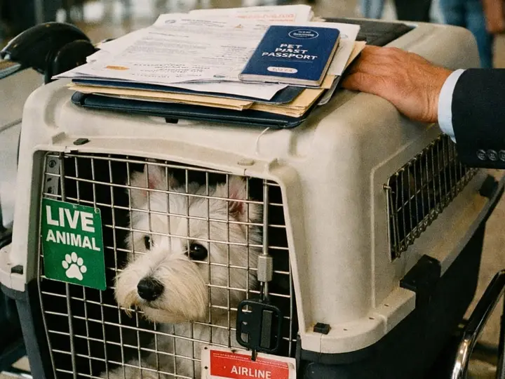
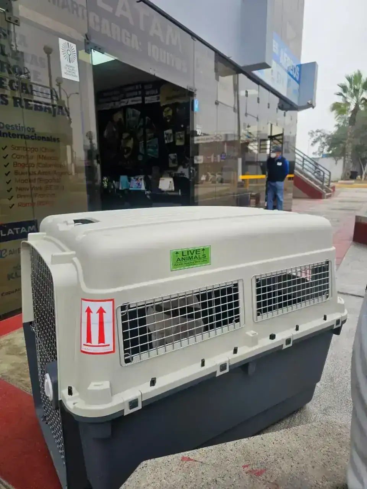
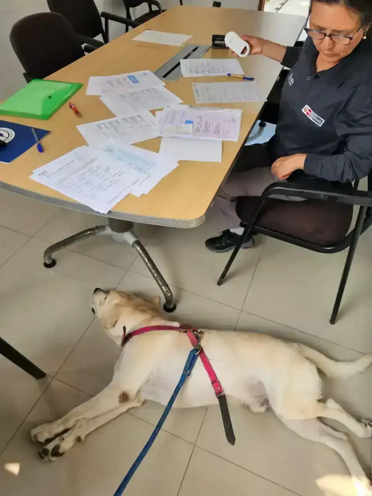
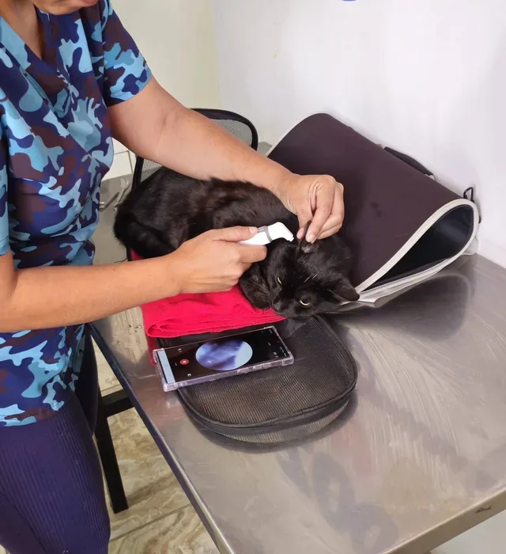
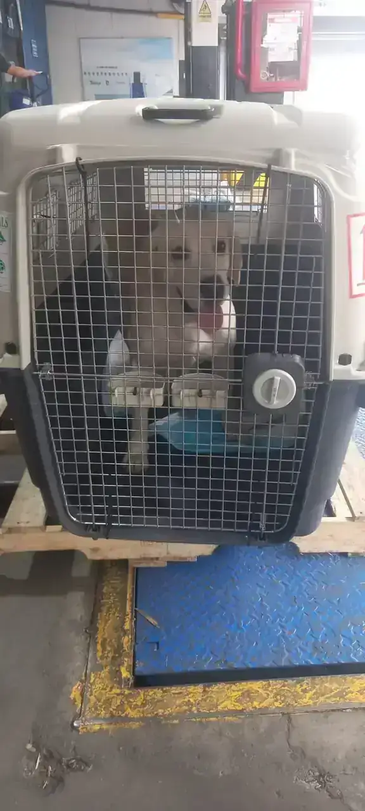
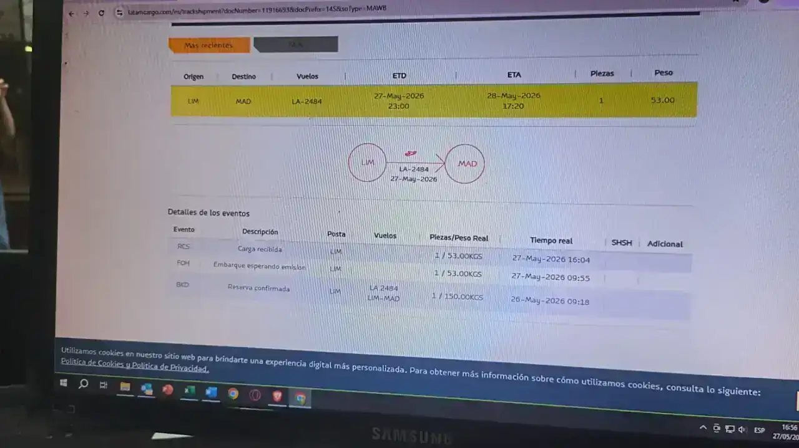
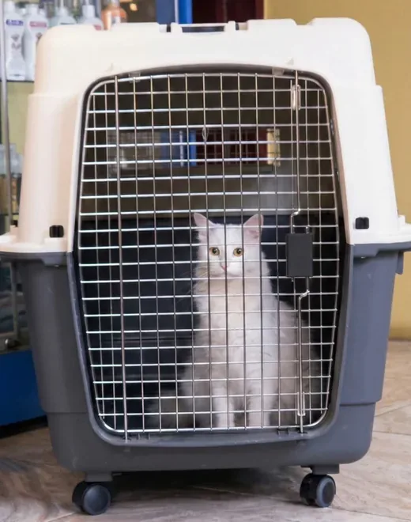
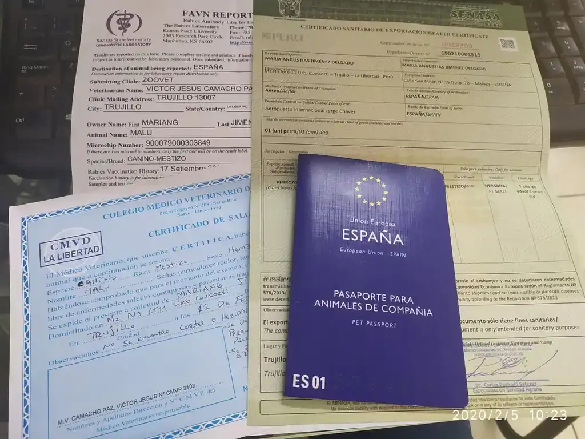

Clinique Vétérinaire · Fret International
Exportez votre Animal depuis le Pérou avec un Soutien Vétérinaire Certifié
Nous gérons l'intégralité du processus d'exportation internationale de votre animal — évaluation clinique, protocoles SENASA, sérologie antirabique et coordination logistique. Tout depuis Trujillo, sans aller à Lima.
Micropuce ISO 11784/11785 · Sérologie RNATT/FAVN · Certificat Zoosanitaire d'Exportation · Protocoles par destination. Espagne, États-Unis, France, Allemagne, EAU, Japon, Australie et plus.

Cage IATA certifiée · Documentation complète
Cas réel — exportation internationale depuis le Pérou



De l'aéroport de Lima à destination — documenté à chaque étape
Le Différenciateur Clinique
Exporter un animal de compagnie n'est pas une simple formalité administrative. C'est un processus médical aux conséquences réelles sur la santé de l'animal — et cela exige que la personne qui signe le certificat sanitaire soit aussi celle qui a cliniquement évalué l'animal, connaît son historique, son état respiratoire, son statut vaccinal et ses facteurs de risque spécifiques.
Notre équipe vétérinaire, inscrite au CMVP (Nº 12434) et autorisée par le SENASA, réalise une évaluation clinique complète de chaque animal avant d'émettre tout document. Nous ne sous-traitons pas la partie médicale — c'est le cœur de notre service.
La réglementation zoosanitaire internationale évolue sans préavis. Une exigence valable pour l'Espagne il y a six mois peut avoir été modifiée. Notre équipe surveille activement ces changements — c'est partie intégrante du travail, pas une consultation supplémentaire.
Ce que nous faisons différemment
- Évaluation clinique préalable à toute démarche administrative
- Avis médical sur l'aptitude au vol, notamment pour les races à risque
- Suivi actif des évolutions réglementaires par pays de destination
- Signature vétérinaire valide auprès de toute autorité zoosanitaire mondiale
- Dossier complet audité avant l'embarquement

Évaluation clinique incluse
Chaque animal que nous exportons passe par une évaluation médicale complète avant l'émission des documents. Protocole d'aptitude au vol, analyse des risques respiratoires et avis vétérinaire documenté.
Destinations Principales
Exigences clés par pays de destination. Les protocoles complets varient selon l'espèce, la race et le statut vaccinal de l'animal. Consultez votre cas spécifique.
Union Européenne
Espagne
- Micropuce ISO 11784/11785 implantée avant la vaccination antirabique
- Vaccin antirabique valide avec rappel selon le protocole du fabricant
- Certificat zoosanitaire officiel SENASA/TRACES, émis au maximum 10 jours avant le vol
Délai estimé : 3–6 semaines
Guide complet →Amérique du Nord
États-Unis
- Micropuce ISO 11784/11785 ou tatouage lisible pour les chiens
- Vaccin antirabique valide (obligatoire pour les chiens ; restrictions supplémentaires USDA 2024)
- Certificat sanitaire USDA/APHIS émis par un vétérinaire accrédité
Délai estimé : 4–8 semaines
Guide complet →Union Européenne
France
- Micropuce ISO 11784/11785 implantée avant la première vaccination antirabique
- Vaccin antirabique valide enregistré dans le passeport vétérinaire
- Certificat officiel TRACES émis par l'autorité compétente SENASA
Délai estimé : 3–6 semaines
Union Européenne
Allemagne
- Micropuce ISO 11784/11785 enregistrée avant le vaccin antirabique
- Vaccin antirabique valide conformément au protocole du fabricant
- Certificat sanitaire officiel TRACES/SENASA avec inspection vétérinaire de sortie
Délai estimé : 3–6 semaines
Moyen-Orient
Émirats Arabes Unis
- Micropuce ISO 11784/11785 et vaccin antirabique avec rappel à jour
- Sérologie antirabique (RNATT/FAVN) avec titre ≥ 0,5 UI/ml dans un laboratoire agréé OIE
- Permis d'importation préalable émis par le MOCCAE (Ministère de l'Environnement des EAU)
Délai estimé : 3–5 mois
Asie-Pacifique
Japon
- Micropuce ISO + 2 sérologies FAVN espacées d'au moins 30 jours, toutes deux avec titre ≥ 0,5 UI/ml
- Délai d'attente minimum de 180 jours à partir de la deuxième sérologie positive avant le vol
- Notification préalable au Ministère de l'Agriculture du Japon (MAFF) et quarantaine pouvant aller jusqu'à 180 jours à l'arrivée si le protocole n'est pas respecté
Délai estimé : 8–12 mois minimum
Guide complet →Océanie
Australie
- Micropuce ISO + vaccin antirabique valide + sérologie FAVN avec titre ≥ 0,5 UI/ml
- Traitement antiparasitaire (Praziquantel) et déparasitage interne dans des délais spécifiques avant le vol
- Quarantaine obligatoire à l'arrivée (minimum 10 jours dans un établissement agréé par le DAFF)
Délai estimé : 6–10 mois
Europe — Post Brexit
Royaume-Uni
- Micropuce ISO 11784/11785 implantée avant le vaccin antirabique
- Vaccin antirabique avec délai d'attente de 21 jours après la primo-vaccination avant le voyage
- Traitement antiparasitaire au praziquantel administré entre 24 et 120 heures avant l'embarquement (chiens uniquement)
Délai estimé : 4–8 semaines
Guide complet →Les exigences peuvent varier selon l'espèce, le statut vaccinal antérieur et les protocoles en vigueur au moment de l'exportation. La consultation gratuite est la première étape pour savoir exactement ce qui s'applique à votre cas.
Le Processus en 5 Étapes
Consultation diagnostique
Nous évaluons la destination, l'espèce, la race, le statut vaccinal actuel et les facteurs de risque de l'animal. Nous déterminons ici si le voyage est réalisable, quel protocole s'applique, combien de temps il prend et ce qu'il coûte. Sans engagement de contractualisation.
Protocoles cliniques
Implantation de la micropuce ISO 11784/11785, mise à jour du calendrier vaccinal, déparasitage interne et externe, et sérologie antirabique RNATT/FAVN lorsque la destination l'exige. Tout est réalisé par notre équipe vétérinaire dans les délais réglementaires appropriés.
Gestion SENASA
Nous traitons le Certificat Zoosanitaire d'Exportation (CZE) auprès du SENASA, avec des délais d'émission coordonnés au vol confirmé. Le certificat a une validité limitée — son émission hors de la fenêtre invalide l'embarquement.

Coordination logistique
Nous conseillons sur la caisse de transport IATA adaptée à la taille et au poids de l'animal, les exigences de la compagnie aérienne et la documentation d'embarquement. Nous vérifions que le dossier complet est en ordre avant la remise à l'aéroport.

Suivi post-embarquement
Nous sommes disponibles pour répondre aux questions pendant le transit et vous guider dans le processus d'entrée dans le pays de destination. Si une quarantaine est prévue, nous vous expliquons son fonctionnement et ce à quoi vous attendre.

Envois Réalisés
Des animaux arrivés à destination avec un protocole complet et sans incident. Chaque cas est unique — chaque dossier, audité.

Cas réel · Fret international depuis Trujillo, Pérou
5 continents
Destinations atteintes avec protocole vétérinaire complet
Destinations avec envois réalisés
« Dès le début du processus, tout — médical et documentaire — a été géré depuis Trujillo. L'animal est arrivé sans problème. »
— Propriétaire, exportation vers l'Europe
Arrivée à Madrid · LIM–MAD · Protocole complet

Passeport UE + FAVN + SENASA · Documentation complète pour l'Espagne
Questions Fréquentes
Ressources pour Planifier le Voyage de votre Animal
Guides techniques et protocoles rédigés par notre équipe vétérinaire. Sans abonnement, sans formulaire.
Documentation
Certificat Zoosanitaire d'Exportation SENASA : qu'est-ce que c'est et comment l'obtenir
Sérologie
Sérologie antirabique RNATT / FAVN : guide complet pour le transport international d'animaux
Identification
Micropuce ISO 11784/11785 : qu'est-ce que c'est et où la poser à Trujillo
Transport aérien
Est-il sûr de faire voyager son animal en soute ? Ce que dit vraiment l'IATA
Trujillo
Où effectuer les démarches d'exportation à Trujillo — sans aller à Lima
Planification
Combien de temps à l'avance faut-il commencer les démarches d'exportation ?
Avez-vous déjà calculé si votre animal peut voyager à votre date exacte ? Le Planificateur de Voyage calcule le calendrier inversé, le feu de viabilité et le PDF en 2 minutes.
Calculer maintenant →Consultation initiale · Sans engagement
Quand voyage votre animal ?
Dites-nous la destination et l'animal. Nous évaluons le cas, vous expliquons le protocole exact, les délais réels et le coût — avant que vous ne confirmiez la moindre réservation de vol.
Devis par WhatsAppOu écrivez-nous à contacto@zoovettravel.com